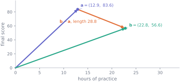
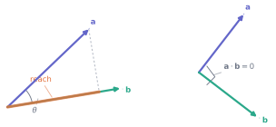
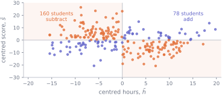

Data as vectors
Why this lesson is here
A dataset is a grid of numbers, and so far you have treated it one number at a time. This lesson treats a whole row or a whole column as a single object — a vector — with an arithmetic of its own.
That change of view pays for itself immediately. The distance between two students becomes the length of a vector. The correlation between two variables turns out to be the cosine of the angle between two vectors, which is why it can never leave the range \(-1\) to \(1\). The gradient of M6 was a vector all along. And every lesson from here to the end of the Mathematics track — matrices, solving \(A\mathbf{x} = \mathbf{b}\), least squares, the SVD — is built on the two operations defined below.
Before you start
You should be able to:
- read subscript and \(\sum\) notation — M1;
- find a point on a pair of axes — M1;
- make and index a NumPy array — P6;
- use
.sum(), and recall that*and@are different — P7.
Quick check. How far is the point \((3, 4)\) from the origin?
TipShow the answer
\[\sqrt{3^2 + 4^2} = \sqrt{25} = 5.\]
Pythagoras. Everything this lesson says about length in 238 dimensions is that same calculation with more terms under the square root, and nothing else.
The idea
Take two students from the cohort and record two numbers for each — hours of practice and final score:
| hours | score | |
|---|---|---|
| S0001 | 12.9 | 83.6 |
| S0002 | 22.8 | 56.6 |
Each row is a pair of numbers, so each is a point on a pair of axes. Draw an arrow to it from the origin and you have a vector: an ordered list of numbers, which you can also think of as a position, or as a step of a certain size in a certain direction.
Now the move that matters. A student’s row is a vector; so is a column. The 238 usable final scores in the cohort form one vector with 238 components, and the 238 practice hours form another. You cannot draw those, and you do not need to: the arithmetic below is written with \(\sum\) and works for any number of components at all. The picture is a two-dimensional aid to intuition. The formulas are the thing.
The mechanics
Notation
A vector is an ordered list of \(n\) real numbers, written in bold: \(\mathbf{v} = (v_1, v_2, \ldots, v_n)\). The set of all of them is written \(\mathbb{R}^n\), and \(n\) is the dimension. A student’s three measurements live in \(\mathbb{R}^3\); a column of 238 scores lives in \(\mathbb{R}^{238}\).
Note what \(n\) counts. It is the number of components in this vector, not the number of variables in the dataset. A column vector of 238 scores has dimension 238, however few columns the table has.
Adding and scaling
Both work component by component:
\[ \mathbf{a} + \mathbf{b} = (a_1 + b_1,\; \ldots,\; a_n + b_n), \qquad c\,\mathbf{a} = (c\,a_1,\; \ldots,\; c\,a_n). \]
Both mean something on data. Adding the vector \((5, 5, \ldots, 5)\) to a column of marks gives everyone five more marks. Multiplying a column of hours by \(60\) converts it to a column of minutes — a change of units is a scalar multiple. Vectors of different lengths cannot be added at all, which is a feature: it is the arithmetic refusing to combine 238 scores with 12 of something else.
Length and distance
The length of a vector, written \(\lVert \mathbf{v} \rVert\), is Pythagoras with \(n\) terms:
\[ \lVert \mathbf{v} \rVert = \sqrt{v_1^2 + v_2^2 + \cdots + v_n^2} = \sqrt{\textstyle\sum_{i=1}^{n} v_i^2}. \]
The distance between two vectors is the length of the step between them, \(\lVert \mathbf{a} - \mathbf{b} \rVert\). That single formula is what lets an algorithm ask “which two students are most alike?” — and it is worth noticing straight away that it takes the columns’ units at face value, so a variable measured in large numbers dominates it. That is the same scaling problem that sank the first attempt in M6, arriving in a new place.
The dot product
Multiply matching components and add up the results:
\[ \mathbf{a} \cdot \mathbf{b} = a_1b_1 + a_2b_2 + \cdots + a_nb_n = \textstyle\sum_{i=1}^{n} a_i b_i . \]
The answer is a single number, not a vector. Two immediate consequences: taking the dot product of a vector with itself gives \(\mathbf{v} \cdot \mathbf{v} =
\lVert \mathbf{v} \rVert^2\), and in NumPy this is a @ b — a * b is the componentwise product from P7, a vector, and a different thing entirely.
The reason the dot product is worth having a name is that it is also a statement about angle:
\[ \mathbf{a} \cdot \mathbf{b} = \lVert \mathbf{a} \rVert \, \lVert \mathbf{b} \rVert \cos\theta , \qquad\text{so}\qquad \cos\theta = \frac{\mathbf{a} \cdot \mathbf{b}}{\lVert \mathbf{a} \rVert \, \lVert \mathbf{b} \rVert}, \]
where \(\theta\) is the angle between the two vectors. One formula, two readings — a sum of products on the left, a geometric fact on the right. The identity is checked numerically at the end of the lesson rather than proved here.

Since \(\cos\theta\) never leaves \([-1, 1]\), the dot product can never exceed \(\lVert\mathbf{a}\rVert\,\lVert\mathbf{b}\rVert\) in size. And \(\theta = 90°\) gives \(\cos\theta = 0\): two nonzero vectors are orthogonal — at right angles — exactly when their dot product is zero. (The zero vector has zero dot product with everything and no direction at all, so it is the one case where the angle is simply undefined.) That is the definition used in \(\mathbb{R}^{238}\), where “at right angles” cannot be checked by looking.
Worked example
Correlation is the cosine of an angle.
Take the two cohort columns as vectors in \(\mathbb{R}^{238}\) and centre them: subtract each one’s mean, so that each has mean zero. Write \(\tilde{h}\) and \(\tilde{s}\) for the centred hours and centred scores.
import numpy as np
import pandas as pd
cohort = pd.read_csv("data/cohort.csv")
usable = cohort[cohort["final_score"].between(0, 100)]
h, s = usable["hours_practice"].to_numpy(), usable["final_score"].to_numpy()
hc, sc = h - h.mean(), s - s.mean()
cos_theta = (hc @ sc) / (np.linalg.norm(hc) * np.linalg.norm(sc))
print(f"dimension {hc.shape[0]}")
print(f"hc . sc {hc @ sc:.4f}")
print(f"||hc||, ||sc|| {np.linalg.norm(hc):.4f}, {np.linalg.norm(sc):.4f}")
print(f"cos(theta) {cos_theta:.6f}")
print(f"np.corrcoef {np.corrcoef(h, s)[0, 1]:.6f}")
print(f"theta {np.degrees(np.arccos(cos_theta)):.2f} degrees")dimension 238
hc . sc -3777.9636
||hc||, ||sc|| 125.2584, 129.0720
cos(theta) -0.233679
np.corrcoef -0.233679
theta 103.51 degreesThe correlation coefficient and the cosine are not merely close; they are the same calculation. That is what correlation is: the cosine of the angle between two centred columns. Three things follow at once, none of which you have to memorise separately.
- It cannot exceed 1 or fall below \(-1\), because no cosine does.
- \(+1\) means angle zero — the two centred columns point the same way, so one is a positive multiple of the other and the scatter is a perfect rising line.
- \(0\) means orthogonal.
Here the angle is \(103.5°\): slightly more than a right angle, which is the geometric version of “a weak negative relationship”.
Why the centring is not optional: without it the same calculation gives \(0.876\), which would announce a strong positive relationship in data that has a negative one. Uncentred, both columns are entirely positive, so every term of the sum is positive and the angle between them is forced to be small. Centring removes that artefact — and it has a tidy vector meaning, which is Exercise 3.
The dot product is a sum over students, so you can ask which students it is made of. Each contributes \(\tilde{h}_i \times \tilde{s}_i\), which is positive when the student is on the same side of average in both columns and negative when they are on opposite sides:

That picture is worth holding on to, because it is what a correlation coefficient is doing under the arithmetic: counting students for and against, weighted by how far from average they are. It also shows how little separates the two groups here — 160 against 78 is not a landslide, and \(-0.234\) is not a strong number. S12 shows that even this weak negative reverses inside every background group.
Try it yourself
Exercise 1 For \(\mathbf{a} = (3, -1, 2)\) and \(\mathbf{b} = (1, 4, 0)\), find \(\mathbf{a} + \mathbf{b}\), \(2\mathbf{a}\), \(\mathbf{a} \cdot \mathbf{b}\) and \(\lVert \mathbf{a} \rVert\).
TipShow the solution
\[\mathbf{a} + \mathbf{b} = (4,\, 3,\, 2), \qquad 2\mathbf{a} = (6,\, -2,\, 4).\]
\[\mathbf{a} \cdot \mathbf{b} = (3)(1) + (-1)(4) + (2)(0) = 3 - 4 + 0 = -1.\]
\[\lVert \mathbf{a} \rVert = \sqrt{9 + 1 + 4} = \sqrt{14} \approx 3.742.\]
The one to check yourself on is the dot product: the answer is the number \(-1\), not the vector \((3, -4, 0)\). That vector is the componentwise product — what a * b computes in NumPy — and summing it is the last step you must not forget.
Exercise 2 Two students are recorded as \((89.1, 12.9, 83.6)\) and \((42.4, 22.8, 56.6)\), in the order (diagnostic score, hours, final score). How far apart are they? Which of the three measurements is doing most of the work, and why is that a problem?
TipShow the solution
The difference is \((89.1 - 42.4,\; 12.9 - 22.8,\; 83.6 - 56.6) = (46.7,\, -9.9,\, 27.0)\), so
\[\lVert \mathbf{a} - \mathbf{b} \rVert = \sqrt{46.7^2 + 9.9^2 + 27^2} = \sqrt{2180.89 + 98.01 + 729} = \sqrt{3007.9} \approx 54.84 .\]
The diagnostic score contributes \(2180.89\) of that \(3007.9\) — about 72% — not because it matters more but because it is measured on a scale that produces bigger gaps. Hours of practice, which run from 1 to 36, can never contribute much against a variable running from 27 to 100.
This is why distances are usually computed on standardised columns. It is the same lesson as M6’s diverging descent: a formula that adds squared differences treats “one unit” as meaning the same thing in every column, and it is your job to make that true before you use it.
Exercise 3 Let \(\mathbf{1} = (1, 1, \ldots, 1)\) and let \(\tilde{\mathbf{v}}\) be a centred vector — one whose components have mean zero. Show that \(\tilde{\mathbf{v}} \cdot \mathbf{1} = 0\), and say what that means in words.
TipShow the solution
\[\tilde{\mathbf{v}} \cdot \mathbf{1} = \sum_{i=1}^{n} \tilde{v}_i \times 1 = \sum_{i=1}^{n} \tilde{v}_i = n \times \operatorname{mean}(\tilde{\mathbf{v}}) = 0 .\]
In words: a centred vector is orthogonal to the all-ones vector. Centring is not just a convenience for making the arithmetic tidy — it is the geometric operation of removing everything the column has in common with “the same value for everybody”, leaving only the variation about that value.
That is the honest reason the worked example had to centre before measuring an angle. Correlation is meant to be about variation, and the uncentred vectors still carry their overall level, which is what dragged the answer to \(0.876\).
Check it in Python
The claim to test is the identity \(\mathbf{a} \cdot \mathbf{b} = \lVert\mathbf{a}\rVert \lVert\mathbf{b}\rVert \cos\theta\), which the lesson asserted without proof. Nothing in the definition of the dot product mentions an angle, so this needs checking rather than believing.
In two dimensions the angle can be measured independently, straight off the axes, with arctan2:
a2, b2 = np.array([2.6, 2.5]), np.array([3.6, 0.6])
angle_a = np.arctan2(a2[1], a2[0]) # each vector's own direction
angle_b = np.arctan2(b2[1], b2[0])
theta_geometry = abs(angle_a - angle_b)
theta_dot = np.arccos((a2 @ b2) / (np.linalg.norm(a2) * np.linalg.norm(b2)))
print(f"angle measured from the axes {np.degrees(theta_geometry):.6f} degrees")
print(f"angle from the dot product {np.degrees(theta_dot):.6f} degrees")
print(f"agree: {np.isclose(theta_geometry, theta_dot)}")angle measured from the axes 34.414375 degrees
angle from the dot product 34.414375 degrees
agree: TrueThat works only because two dimensions can be drawn. The formula, though, has no such restriction, and the consequence worth testing in high dimensions is that \(\lvert \mathbf{a} \cdot \mathbf{b} \rvert\) can never exceed \(\lVert\mathbf{a}\rVert\lVert\mathbf{b}\rVert\) — because a cosine cannot exceed 1. Try to break it:
rng = np.random.default_rng(2026)
ratios = []
for _ in range(10_000):
x, y = rng.normal(size=50), rng.normal(size=50)
ratios.append(abs(x @ y) / (np.linalg.norm(x) * np.linalg.norm(y)))
ratios = np.array(ratios)
parallel = rng.normal(size=50)
tripled = abs(parallel @ (3*parallel)) / (np.linalg.norm(parallel) * np.linalg.norm(3*parallel))
print(f"10,000 random pairs in R^50: largest |cos| {ratios.max():.6f}"
f" typical |cos| {np.median(ratios):.6f}")
print(f"a vector against 3x itself: |cos| {tripled:.6f}")10,000 random pairs in R^50: largest |cos| 0.515970 typical |cos| 0.094704
a vector against 3x itself: |cos| 1.000000Ten thousand attempts get nowhere near 1, and the bound is reached only when the two vectors are parallel. The typical value is worth a second look too. The code takes absolute values, so what the median says is that half of all random pairs have \(\lvert\cos\theta\rvert\) below \(0.09\) — an angle within about \(5°\) of a right angle, on one side or the other, since positive and negative are equally likely. In fifty dimensions, two directions picked at random are nearly orthogonal — a fact with no analogue in the plane, and one to remember before reading much into a small correlation.
Note also the last line: tripling a vector does not change the angle at all. Angles are scale-free and dot products are not, which is exactly why correlation is reported instead of the raw sum of products.
Finally, the trap that costs the most time in practice:
x, y = np.array([3.0, -1.0, 2.0]), np.array([1.0, 4.0, 0.0])
print("x * y =", x * y, " -> a vector, the componentwise product")
print("x @ y =", x @ y, " -> a number, the dot product")
print("(x * y).sum() =", (x * y).sum(), " -> the same number, the long way")x * y = [ 3. -4. 0.] -> a vector, the componentwise product
x @ y = -1.0 -> a number, the dot product
(x * y).sum() = -1.0 -> the same number, the long way* and @ both run without error and return different kinds of thing. Nothing will tell you which one you meant.
Common wrong turns
Where this usually goes wrong
- Writing
a * bfor the dot product -
In NumPy
*multiplies component by component and gives a vector;@gives the single number. Both are legal, so the mistake surfaces later as a shape error somewhere unrelated, or as a silently wrong answer. - Reading a large dot product as a strong relationship
- The dot product grows if you simply rescale a column — measure hours in minutes and it multiplies by 60. Only after dividing by both lengths is the number comparable with anything, and that quotient is the cosine.
- Correlating without centring
- On these two columns it turns \(-0.234\) into \(+0.876\), which is not a small error but the opposite conclusion. Uncentred columns of positive numbers all point roughly the same way.
- Trusting distance across columns with different scales
- \(\lVert \mathbf{a} - \mathbf{b} \rVert\) adds squared differences as though one unit meant the same thing in every column. A diagnostic score out of 100 will drown a column of hours whatever the two variables actually mean.
- Confusing the dimension with the number of variables
- A column of 238 scores is one vector in \(\mathbb{R}^{238}\). It is not “a 238-variable problem”, and \(n\) here counts rows.
- Expecting the pictures to keep working
- The formulas hold in any dimension; two- and three-dimensional intuition does not always. Two directions drawn at random in \(\mathbb{R}^{50}\) are nearly at right angles almost every time, as the check above measures — nothing in the plane prepares you for that.
Check yourself
Answers are at the foot of the page. Give a reason as well as an answer.
\(\mathbf{a} = (1, 2, 2)\). What is \(\lVert \mathbf{a} \rVert\)?
- \(5\)
- \(3\)
- \(\sqrt{5}\)
- \(9\)
That adds the components. The length squares them first.
Square each component before adding: \(1^2 + 2^2 + 2^2\).
That is the sum of the squares. The length is its square root.
- Two centred columns have \(\cos\theta = 0\). What does that say about the vectors, and what does it say about the two variables?
- You double every entry of \(\mathbf{b}\). What happens to \(\mathbf{a} \cdot \mathbf{b}\), and what happens to the angle between them?
- Someone reports a correlation of \(1.4\). Without seeing their data, how do you know it is wrong?
x * yandx @ yboth run and neither raises an error. What is different about what they return, and how would you catch the mistake?
TipShow the answers
(b) \(3\). \(\sqrt{1 + 4 + 4} = \sqrt{9} = 3\). Option (a) adds the components; (c) forgets to square them; (d) is \(\lVert\mathbf{a}\rVert^2\), which is \(\mathbf{a} \cdot \mathbf{a}\) — a related quantity, and a common slip when the square root gets dropped.
The vectors are orthogonal, at right angles. For the variables it means the correlation is zero: no linear relationship. It does not mean the two are unrelated — a strong curved relationship can have correlation zero, which is why a scatter plot is not optional.
The dot product doubles; the angle is unchanged. Scaling changes a vector’s length, not its direction, and the two extra factors of 2 cancel in \(\mathbf{a}\cdot\mathbf{b} / (\lVert\mathbf{a}\rVert \lVert\mathbf{b}\rVert)\). This is the whole reason correlation is scale-free.
Correlation is a cosine, and no cosine exceeds 1. So the number cannot be a correlation of anything — the mistake is arithmetic, not data, and no amount of looking at the dataset will explain it.
x * yreturns a vector of componentwise products;x @ yreturns a single number. The reliable catch is to check the shape, or to assert it:assert np.isscalar(result) or result.shape == (). Left unchecked it propagates — a vector where a number was expected often broadcasts happily into something with a plausible shape and no meaning.